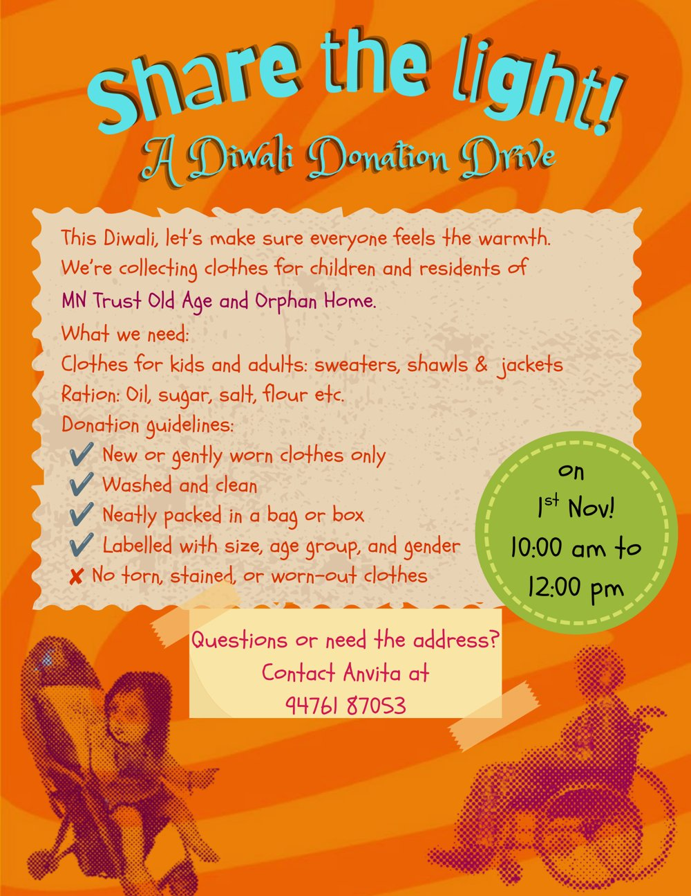

A student-led initiative extending the warmth of every festival to those too often left outside it.
Festivals are, at their heart, acts of sharing: of light, of food, of company. Yet for many, these seasons of celebration pass with little of the warmth they promise. Share the Light was founded to bridge that gap.
The initiative began in Diwali 2026 with a clothes donation drive for the children and elderly residents of MN Trust Old Age and Orphan Home, gathering sweaters, shawls and jackets in anticipation of the winter months. That first drive marked the beginning of a larger commitment: with every festival, Share the Light will organise a donation drive, ensuring that each celebration in the calendar becomes an occasion to give, not merely to receive.
Every contribution is carefully sorted, labelled and delivered by hand, guided by the conviction that dignity is as essential as the gift itself. Our aim is not charity as an occasional gesture, but generosity as a sustained practice, woven into the rhythm of the year.
